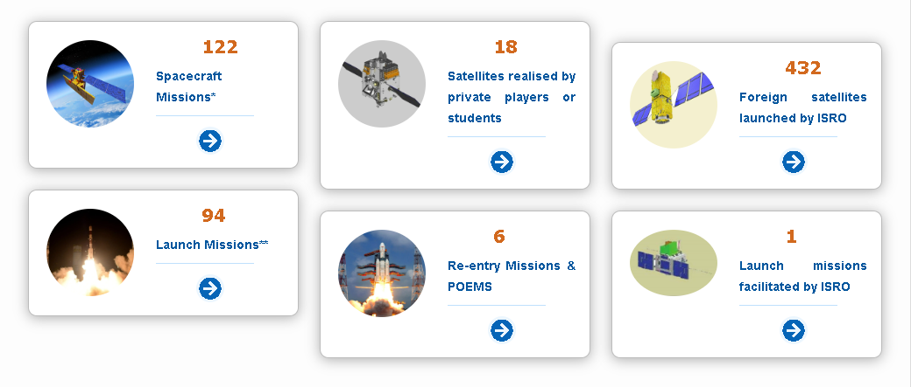

Missions accomplished
Home Department of Space (DOS) is Government of India department mandated with the execution of Indian Space Programme.
The Department of Space has evolved the following programmes with the objective of promoting & developing application of space science and space technology:
Launch Vehicle programme having indigenous capability for launching satellites.
INSAT Programme for telecommunications, broadcasting, meteorology, development of education etc.
Remote Sensing Programme for application of satellite imagery for various developmental purposes.
Research and Development in Space Sciences and Technology for serving the end of applying them for national development.
Department of space, through its agency ISRO, accomplishes space missions to fulfil its vision, mission and objectives. Here are the missions, in numbers.

* Including 3 Nano Satellites, 1 Micro Satellite